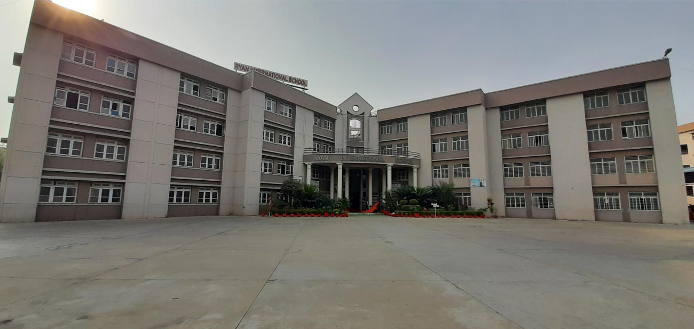

WELCOME LETTER
“There are those who look at the way things are, and ask why? I dream of things that never were, and ask why not?”
- Robert F. Kennedy
Pleasant Greetings of the Day!
The dynamic nature of the world has been gravitated to another extent due to the rapidly-evolving changes taking place in all segments of society today. Even the smallest of decisions play a noteworthy role in determining the current and upcoming landscape of our world.With the world being in a state of turmoil and pandemonium, Ryan Young Leaders’ Model United Nations gives a platform for individuals to put forward their opinions and notions regarding the ongoing political issues and policies. We have always strived to put our best foot forward to deliver an enthralling experience for the delegates, and an aim to leave no stone unturned.
The event hosted by the school's MUN society seeks to provide students with an opportunity to showcase their debating skills and diplomatic prowess in an enriching learning experience. After repeatedly setting benchmarks of excellence, every year higher, and reaffirming the legacy of the conference as one of the best conferences in the circuit, Ryan International School, Faridabad feels honored to present the 5th Offline Edition of the Ryan Young Leaders’ Model United Nations Conference 2022.
To nurture the spirit of diplomacy, each year, we at Ryan work towards creating a simulation with a few of the best, most thought upon, and exhilarating topics to discuss and ponder upon.
We look forward to your vital participation at the conference. Stay tuned for further updates!
Warm Regards,
The Secretariat
Ryan Young Leaders’ Model United Nations Conference 2022
